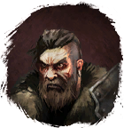
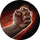
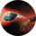
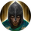

Открыть в интерактивной вики →
| Уровень | 18 |
|---|---|
| Сила (PvE) | 174 |
| Аспект | Solnai |
| Здоровье | 500 |
| Мана | 500 |
| Выносливость | 500 |
| Респаун | 30 минут |
| Путь сложности | Тень |
Локация
Умения

Удар кулаком Удар кулаком — болезненный удар, обычная атака
Бросок камнем Бросок камнем
Транс Транс
Дроп
| Предметы | Синергетики | Эпики | |||
 | | |